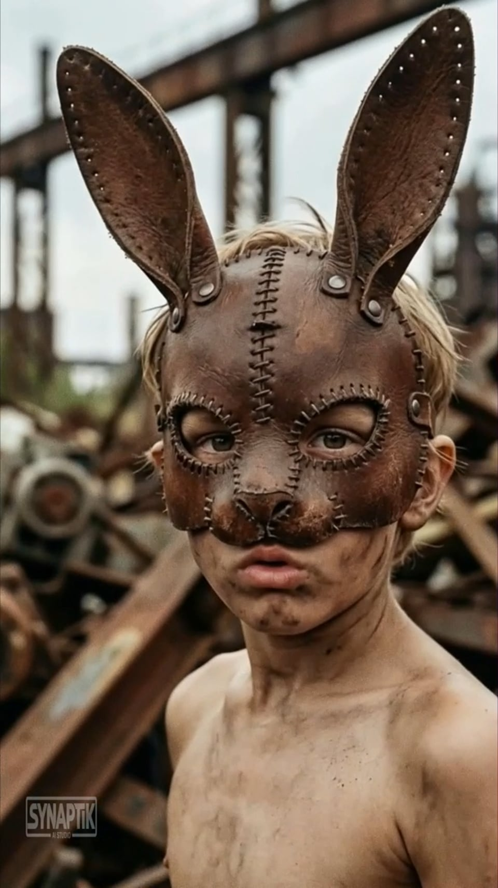

ŒUVRE 08TAG Heuer AI
08
TAG Heuer AI
Spec film · Publicité · IA générative
Un film publicitaire indépendant autour de l’horlogerie, qui met en valeur la montre, ses matières et sa lumière.
ŒUVRE 12 / Spec film · Publicité · IA générative
Une proposition publicitaire indépendante, en format vertical, qui associe des personnages masqués à un univers industriel.

NOTE DE LECTURE / 12
Une proposition indépendante qui rapproche les codes publicitaires du sport et un univers industriel.
ÉCHOS / AUTRES ŒUVRES
Spec film · Publicité · IA générative
Un film publicitaire indépendant autour de l’horlogerie, qui met en valeur la montre, ses matières et sa lumière.

Film publicitaire · Boisson · IA générative
Une boisson transposée dans un univers lunaire : un rover, un astronaute et une canette au cœur de la mise en scène.